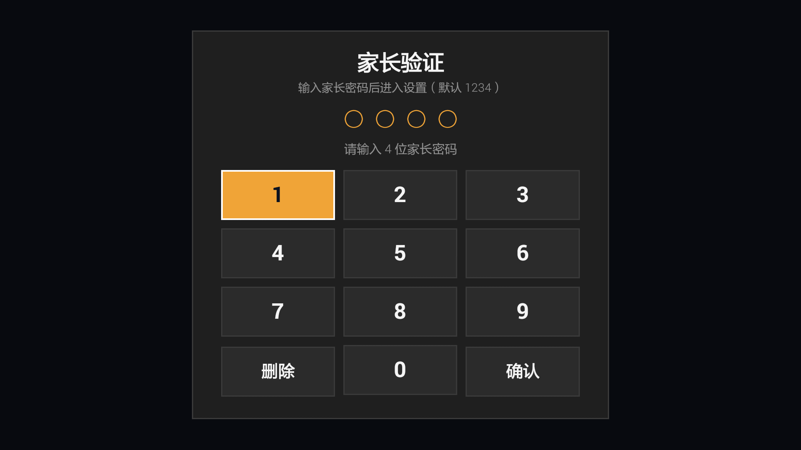
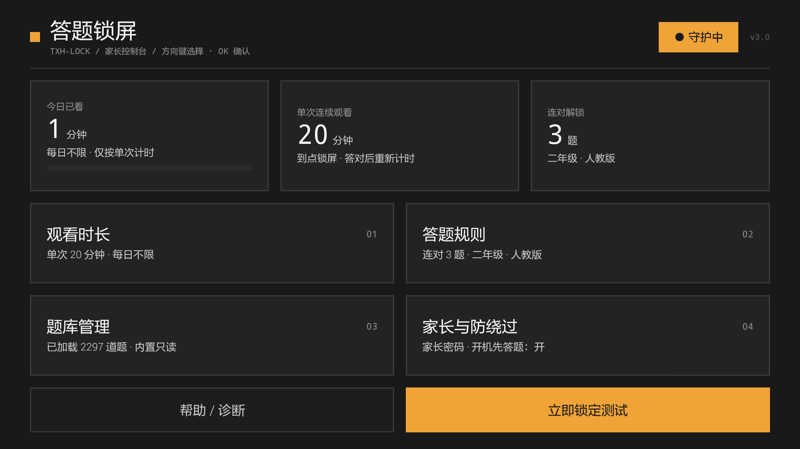
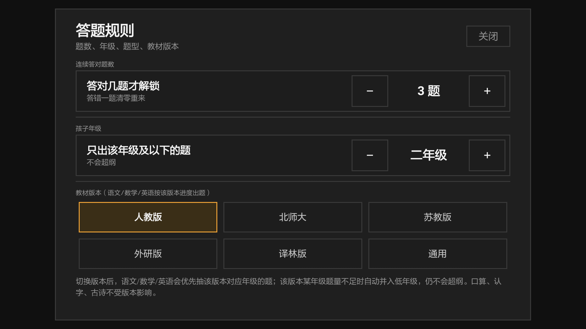
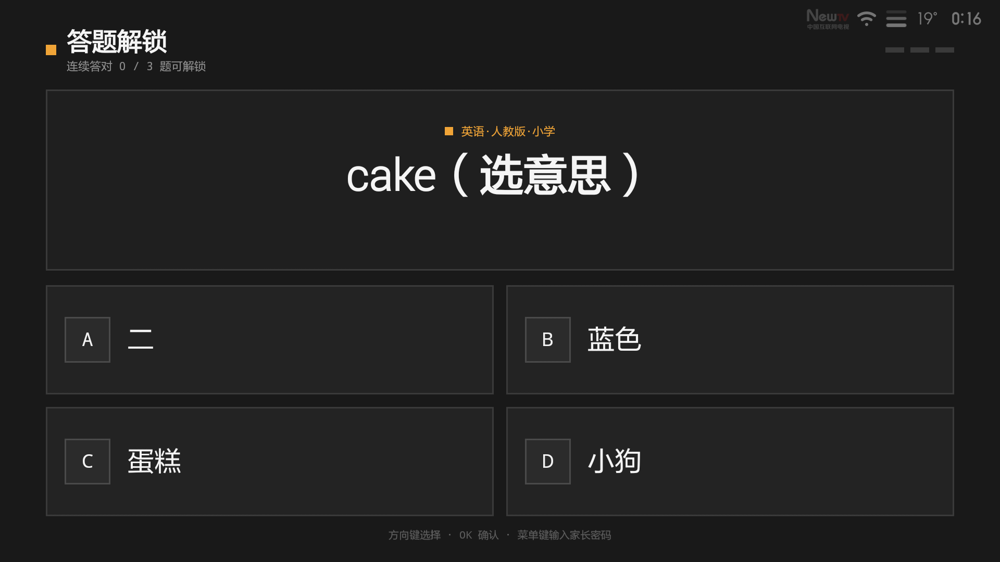

txhlock 答题锁屏 · 电视使用指南
看满时间 → 全屏锁屏 → 遥控器答对题才能继续看。家长可用密码直接解锁。
v3.0.1versionCode 42更新日期 2026-11-06 · 适用 Android 4.3 及以上电视（小米电视 2 实机验证）
v3.0 改了什么
| 变化 | 说明 |
|---|
| 悬浮层锁屏 | 锁屏改成盖在所有应用之上的系统悬浮层：孩子按遥控器主页键，桌面完全不出现，不是"闪一下再抢回"。没有悬浮窗权限时自动退回原来的 Activity 锁屏。 |
| 控制台界面 | 零圆角、1.5dp 细线、单一琥珀强调色、等宽数字。选中/聚焦时整块填琥珀、文字变黑，隔着 3 米也看得清。 |
| 教材同步题库 | 新增人教版 / 北师大版 / 苏教版 / 外研版 / 译林版题库，共 1113 道；按「版本 + 年级」优先出题，内置题量 2000+。 |
| 诊断如实显示 | 「悬浮层覆盖 / 已物理拦截 / 秒级抢回」三档，不再虚报"已拦截"。 |
| 一句话安装 | 安装器自动找 adb、扫局域网找电视、装应用、开无障碍、授权悬浮层、保持常亮。 |
一、安装
方式 A：双击一键安装器（推荐）
- 把 安装器 文件夹拷到电脑（电脑和电视同一个路由器）。
- 双击 一键安装.bat，等它显示「安装完成」。
- 如果提示找不到电视：按窗口里的 4 步在电视上打开 ADB 调试，它会继续等。
电视上开 ADB 的 4 步（只做一次）：
- 设置 → 关于 → 选中「产品型号」连按 5~7 次，提示「已进入开发者模式」。
- 返回 设置 → 开发者选项 → 打开「ADB 调试 / USB 调试」。
- 电视弹出「允许 USB 调试吗」→ 选「始终允许」。
- 回到电脑，等安装器自动继续。
方式 B：让豆包全自动装
电脑打开豆包电脑版 → Agent 模式，把 发给豆包的提示词.txt 整段发过去。
方式 C：U 盘
把 txhlock_v3.0.1.apk 拷进 U 盘 → 电视文件管理器安装 → 手动开「无障碍」和「显示在其他应用上层」。
升级：覆盖安装即可，设置/密码/题库都保留。升级后如果主页键失效，按「帮助/诊断」里的「去修复」把无障碍关一次再开。
装完必做 4 件事
| # | 做什么 | 在哪 |
|---|
| 1 | 打开「自启动」 | 设置 → 应用 → 答题锁屏 → 自启动 |
| 2 | 打开「无障碍」 | 设置 → 无障碍 → 答题锁屏 |
| 3 | 允许「悬浮层」 | 设置 → 应用 → 答题锁屏 → 显示在其他应用上层（4.3 安装即授权） |
| 4 | 关掉「ADB 调试」 | 设置 → 开发者选项 → ADB 调试 |
二、家长控制台
打开应用（桌面图标「答题锁屏」），先输家长密码（默认 1234）。

图1 · 家长验证：方向键选数字，选中的键整块填琥珀，输满 4 位自动校验
密码正确后进入控制台：

图2 · 一屏放完：三张数据块 + 四张设置块 + 底部两个按钮
遥控器：方向键移动，选中的方块整块填琥珀、文字变黑；OK 进入；返回键关闭弹层。
| 方块 | 能改什么 |
|---|
| 今日已看 | 今日累计观看分钟数（点开可调时长） |
| 单次连续观看 | 5~120 分钟，到点锁屏，答对后重新计时 |
| 连对解锁 | 连续答对几题才能解锁 |
| 观看时长 | 单次 / 每日上限 / 关机重置阈值 |
| 答题规则 | 连对题数、年级、教材版本、13 个题型多选 |
| 题库管理 | 题量统计、SMB 同步、重新加载、导出、删除本地题库 |
| 家长与防绕过 | 改密码、开机先答题、锁屏方式/悬浮层权限、系统设置、卸载 |

图3 · 答题规则：连对题数、年级、教材版本（人教版/北师大/苏教版/外研版/译林版/通用）
三、锁屏与答题
看满设定时长，屏幕会被悬浮层锁屏盖住：

图4 · 顶部进度段、中间题目方块、下面 2×2 选项；选中的选项整块填琥珀
- 方向键选答案，OK 确认；数字键 1~4 也能直接作答。
- 答对：绿框 +「✓ 答对了」，顶部进度点亮一段。
- 答错：红框 + 正确答案，并把正确项标绿，进度清零。
- 锁屏时按主页键、返回键都没有反应，桌面不会出现。
- 家长随时可按【菜单键】→ 输密码解锁。
每日上限用完时，孩子答题无法解锁，会提示「今日观看时间已用完，请家长输入密码」；家长输密码后可当日豁免。
四、教材同步题库
| 版本 | 科目 | 年级 | 题量 |
|---|
| 人教版 | 语文 / 数学 / 英语 | 1-9 / 1-9 / 3-9 | 501 |
| 北师大版 | 数学 | 1-6 | 96 |
| 苏教版 | 语文 / 数学 | 1-6 | 178 |
| 外研版 | 英语 | 3-9 | 193 |
| 译林版 | 英语 | 3-6 | 169 |
| 通用 | 原有题库 | 1-9 | 958 |
在「答题规则 → 教材版本」切换；切换后语文/数学/英语优先抽该版本对应年级的题，题量不足自动并入低年级，不会超纲。口算/认字/古诗不受版本影响。
自建题库：把 txt 放到电视 /sdcard/Download/txhlock/，格式 [科目@版本@g年级] 换行 题干|答案|干扰1;干扰2;干扰3，然后点「重新加载题库」。
五、常见问题
- 主页键还能回桌面？先看「帮助/诊断」的主页键状态：显示「悬浮层覆盖」最好；显示「秒级抢回」说明缺悬浮窗权限，到系统里允许「显示在其他应用上层」即可。
- 提示签名冲突？电视上装过别的签名版本。为不丢设置，安装器不会自动卸载；请先在电视上卸载旧版再装。
- 找不到电视？确认同一路由器、ADB 已打开；也可以
一键安装.bat -TvIp 192.168.50.139 指定 IP。
- 怎么确认版本？控制台右上角显示 v3.0.1；系统应用信息里 versionCode 是 42。
- 4K 电视字会小吗？不会，v3.0 按屏幕宽度把整个界面等比放大。
- 卸载后桌面会乱吗？不会。本应用不接管桌面、不改系统设置；先到无障碍关掉它，再卸载即可完全恢复。